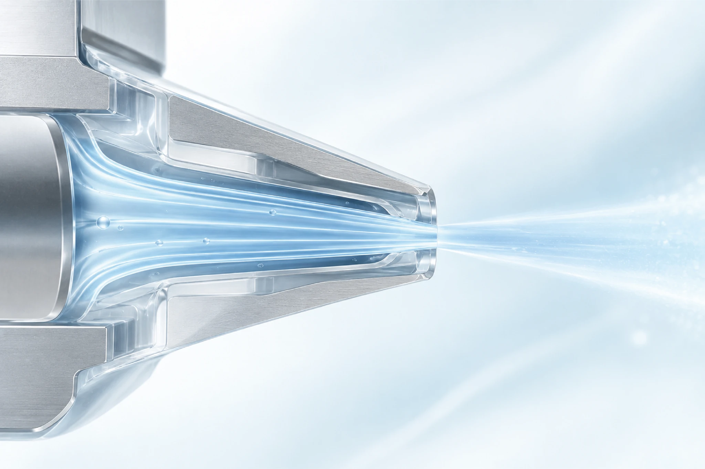
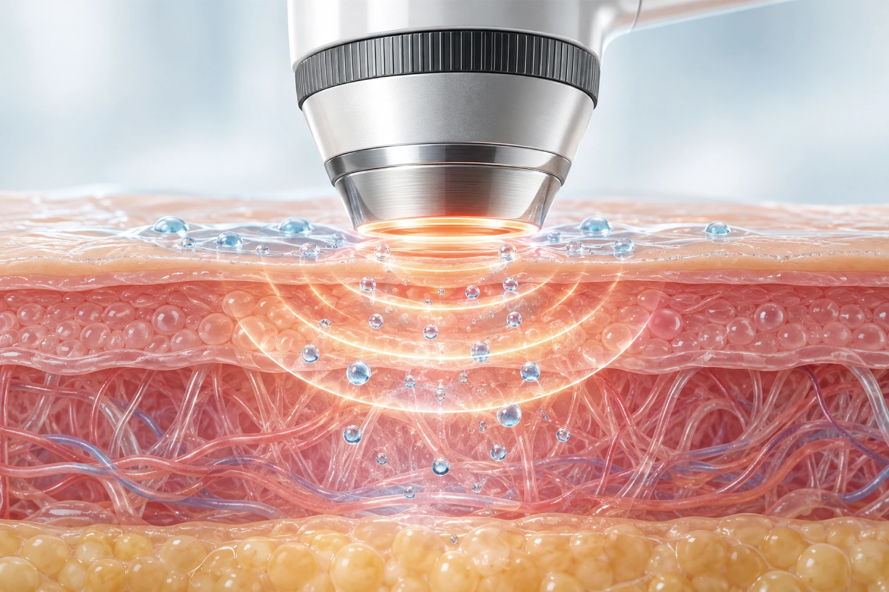
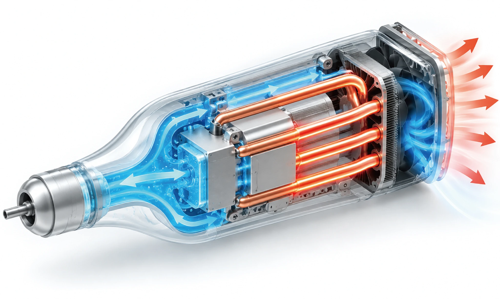

ABOUT IPEUN
의료와 미용을 잇는
새로운 피부케어의 가능성
이픈은 바늘 없는 정밀 분사 기술을 연구하고, 의료기기와 미용기기로 연결합니다.
하나의 기술을 바탕으로, 서로 다른 피부케어 환경을 위한 제품을 만듭니다. 의료기기 All-Jet과 미용기기 INVERA는 이픈의 공통 무바늘 기술에서 출발했습니다.
이픈 알아보기NO NEEDLE PRINCIPLES
바늘 없이, 더 넓은 가능성
이픈은 독자적인 기술을 바탕으로 바늘 없는 정밀 분사 기술을 구현합니다.
NoNeedlePain
바늘 사용에 따른
통증 부담 감소
NoNeedleInjury
바늘로 인한
손상 우려 감소
NoNeedleInfection
바늘 사용과 관련된
감염 우려 감소
CORE TECHNOLOGY
정밀 분사를 위한
이픈의 핵심 설계

PRECISION NOZZLE
에너지 집중형 노즐
유체역학 기반 하향 테이퍼 구조, 와류 최소화, 3종 노즐(150/200/250 μm) 교체
All-Jet, 전 점도 약물 호환
RADIO FREQUENCY
고주파 핸드피스 (All-Jet)
All-Jet에 적용된 40.68 MHz 고주파 핸드피스
약물 전달 효율 향상
DUAL COOLING
이중 냉각 구조
1차 솔레노이드 액침 냉각, 2차 히트파이프 4개 + 펠티어, 40°C 이하 유지
1시간 이상 연속 구동NEWS & EVENTS